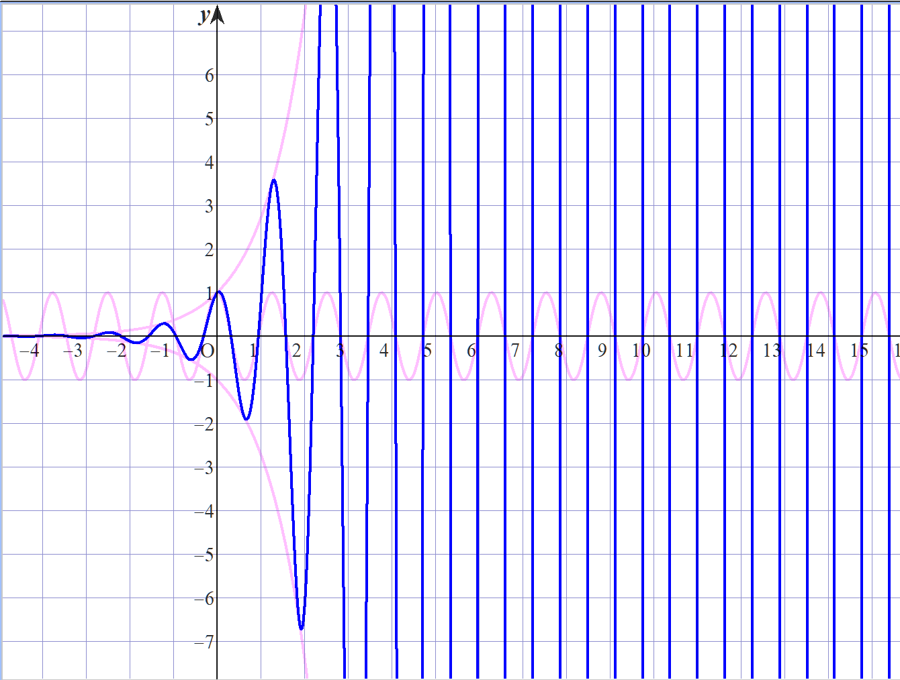

・\(f(x)=e^x \cos ax\)

上図は\(a=5\)の時
青線：\(y=f(x)\)
薄赤線：\(y=e^x, y=-e^x, y=\cos ax\)
第一次導関数：\(f'(x)=e^x(\cos ax-a\sin ax)\)
第二次導関数：\(f''(x)=e^x\{(1-a^2)\cos ax-2a\sin ax\}\)
不定積分：\(F(x)=\frac{1}{a^2+1}e^x(\cos ax+a\sin ax)+C\)
不定積分の導出方法：部分積分または\(e^x\cos ax\)及び\(e^x \sin ax\)の微分を考えることによる導出
停留点のx座標：\(x=\frac{1}{a}(\arctan \frac{1}{a}+k\pi)\)
変曲点のx座標：\(x=\frac{1}{a}(\arctan\frac{1-a^2}{2a}+k\pi)\)